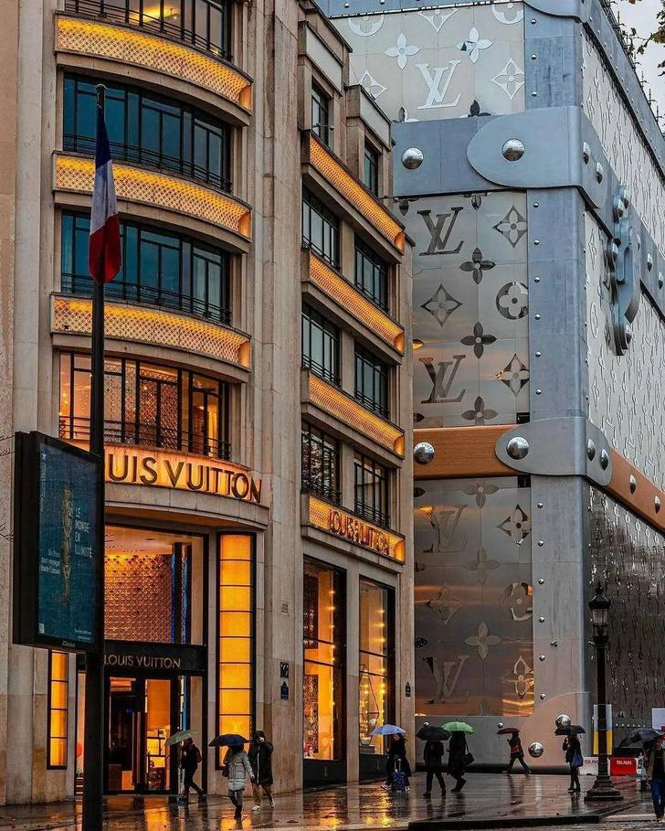
LOUIS VUITTON
Наследие · История · Современность. Как мастерская по упаковке багажа стала самым дорогим люксовым брендом мира и культурной институцией.
Мальчик из провинции
Луи Вюиттон родился в 1821 году в деревне Анше, в горном регионе Юра, в семье простого ремесленника. В 1835-м, в 14 лет, он пешком отправился в Париж — путь почти в 400 км занял два года: чтобы выжить, Луи брался за любую подработку.
В 16 лет, добравшись до столицы, он знал, что хочет работать руками и создавать красивые вещи — и стал учеником господина Марешаля, знаменитого мастера коробок, упаковки и дорожных сундуков. Там он проведёт 17 лет.
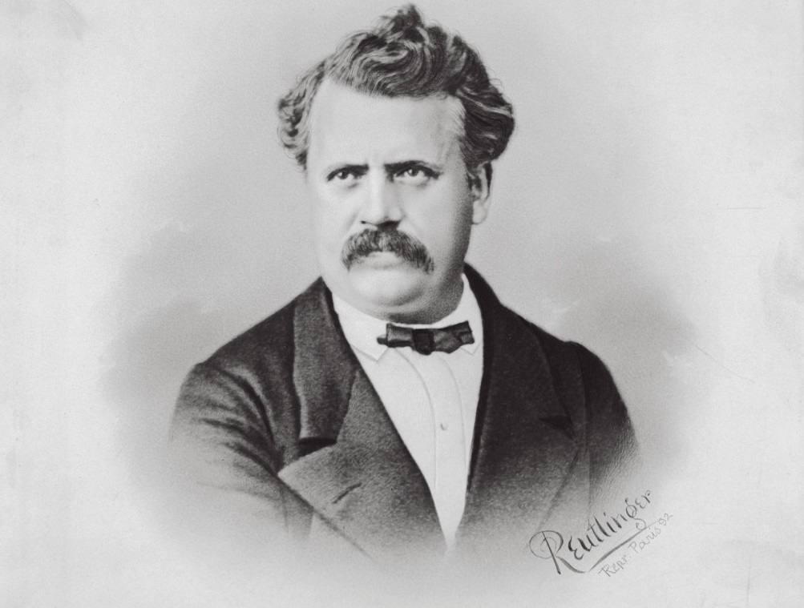
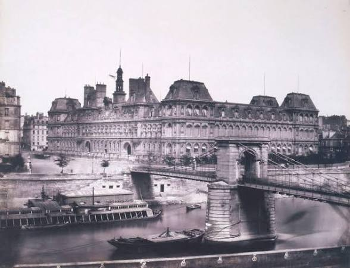
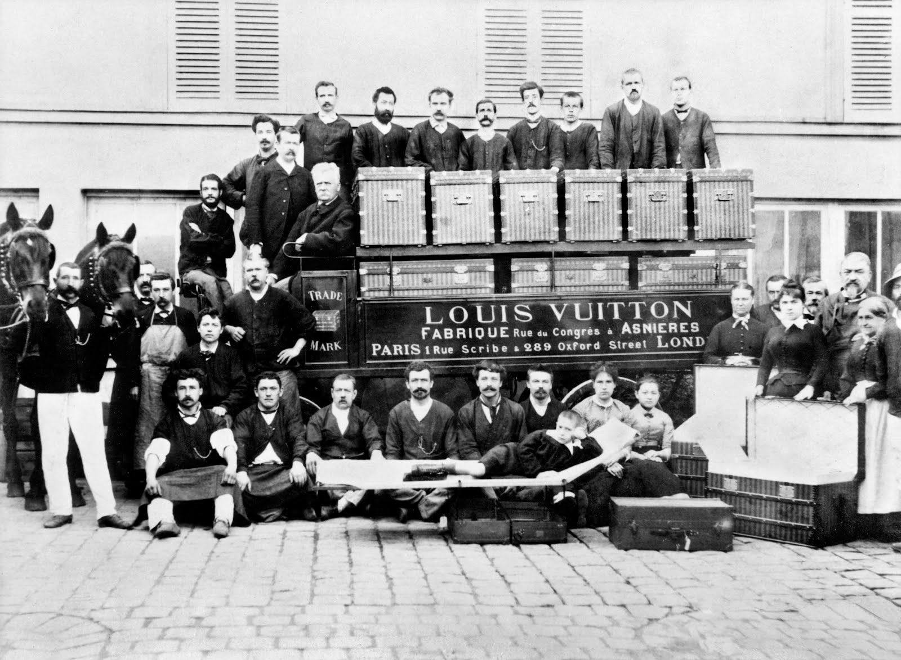
Мастерская и революция Trianon
Собственная мастерская на улице Нёв-де-Капюсин, 4 — рядом с Вандомской площадью, в сердце модного Парижа.
Сундук Trianon: лёгкий, водонепроницаемый холст и — главное — плоская крышка вместо привычной выпуклой. Такие сундуки впервые можно штабелировать в поездах и трюмах пароходов.
Ателье в Аньере под Парижем — работает до сих пор: там и сегодня делают сундуки и спецзаказы.
Клиентка №1 — императрица
Главной клиенткой молодой мастерской стала Евгения де Монтихо — супруга Наполеона III. Императрица назначила Луи своим личным упаковщиком: он сопровождал гардеробы двора между Тюильри, Фонтенбло и Биаррицем.
Как сказали бы сейчас — амбассадор бренда. Статус поставщика двора открыл Вюиттону заказы аристократии всей Европы: это маркетинг влияния за полтора века до инфлюенсеров.
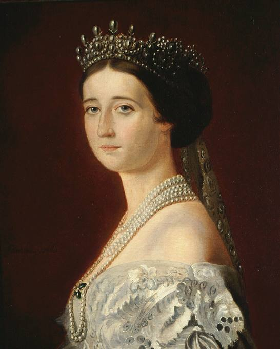
Жорж и код бренда
После смерти Луи в 1892 году дело продолжил сын — Жорж Вюиттон. В 1896-м он создал легендарную монограмму: переплетённые инициалы отца L и V и цветочные мотивы, вдохновлённые японскими гербами-мон.
Цель была практической — защита от подделок: узор официально зарегистрировали как товарный знак. Один из первых случаев, когда орнамент стал юридически защищённым активом — и главным медиа бренда.
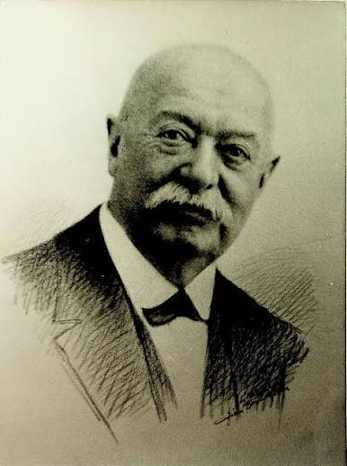
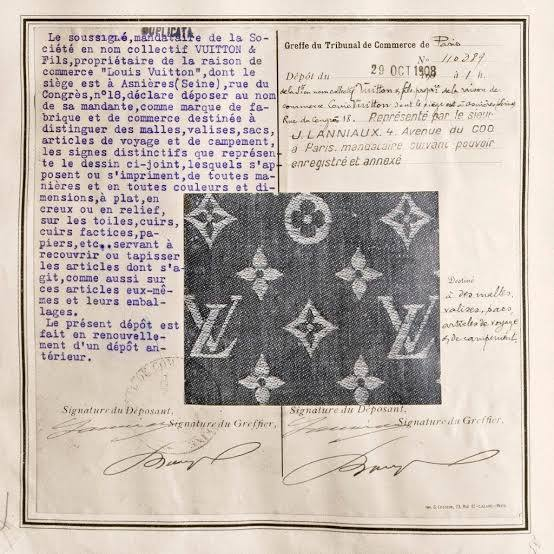
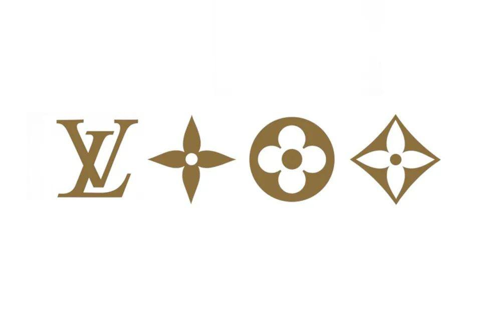
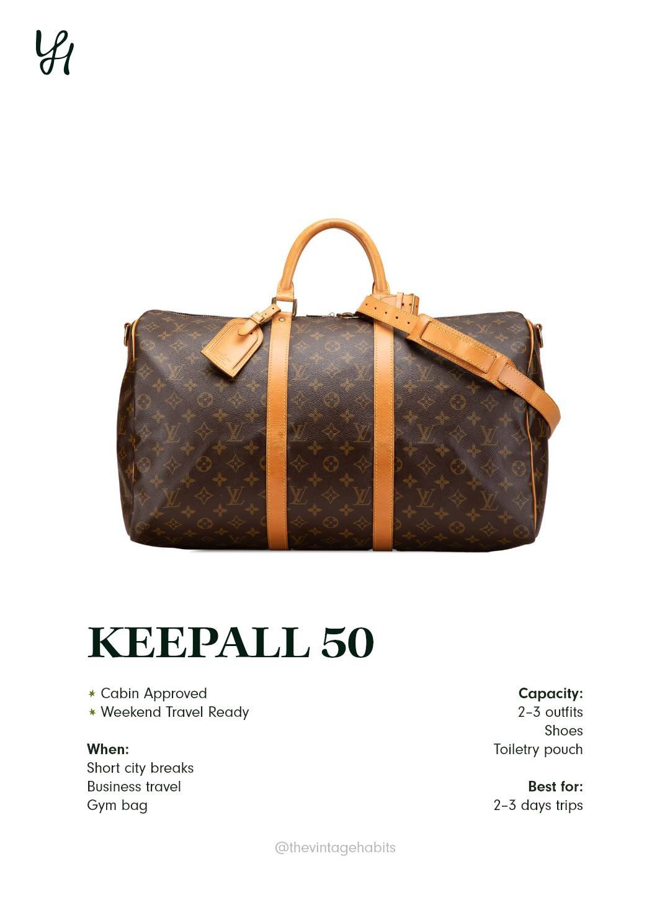
Keepall — «вмещает всё»
В начале XX века мир ускорился — и в 1930-м дом выпустил Keepall: мягкую дорожную сумку-weekender, гибкую и лёгкую альтернативу жёстким сундукам. Название — от английского keep all: «вмещает всё».
Четыре размера — от 45 до 60 см — закрыли все сценарии: от спортзала до трансатлантического перелёта. Силуэт не менялся почти сто лет — признак идеальной формы.
Speedy и эффект Одри
Городская «младшая сестра» Keepall появилась под именем Express — компактная сумка для нового ритма города, позже ставшая Speedy.
В 1965-м Одри Хепбёрн попросила дом сделать ещё меньший размер — так родилась Speedy 25, превратившая дорожную сумку в культовый повседневный аксессуар. Сегодня винтажные Speedy — валюта ресейла и символ «тихого» люкса.
дебют как Express — город вместо вокзала
Speedy 25 — персональный заказ Одри Хепбёрн
винтаж Speedy — один из самых востребованных лотов ресейла
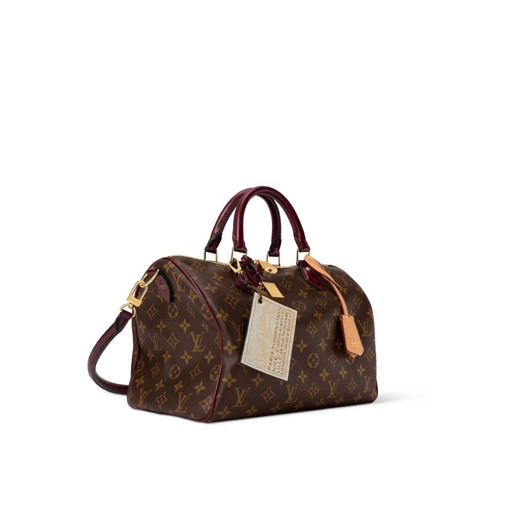
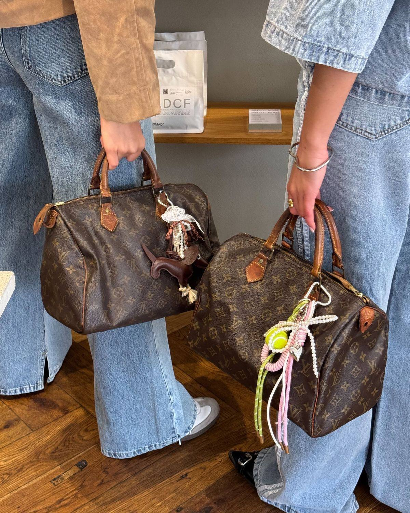
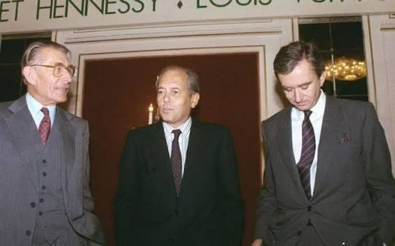
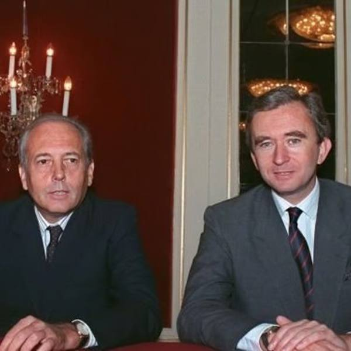
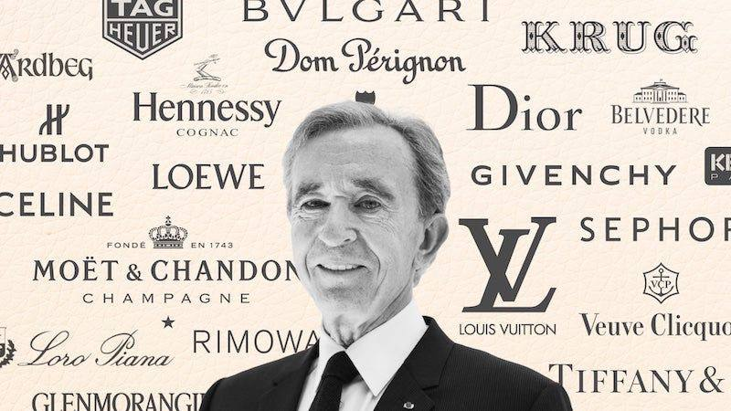
LVMH: империя люкса
Слияние дома Louis Vuitton и холдинга Moët Hennessy (сам он — союз Moët & Chandon и Hennessy, 1971). Архитекторы сделки — Ален Шевалье и Анри Ракамье.
Внутренний конфликт за контроль. На волне «чёрного понедельника» Бернар Арно скупает акции и возглавляет группу.
Под крылом LVMH — около 75 мезонов; Louis Vuitton — флагман и главный источник прибыли группы.
Фаррелл Уильямс
С февраля 2023 мужские коллекции дома ведёт музыкант и продюсер Фаррелл Уильямс. Его философия LVERS — сообщество артистов вокруг дома: мода, музыка и поп-культура как единый язык.
Фаррелл задаёт тон на стыке уличной и высокой моды: пиксельный камуфляж Damoflage, переосмысленные монограммные коды, дебютный показ на мосту Пон-Нёф, амбассадоры-спортсмены — мужская линия стала главным ньюсмейкером рынка.
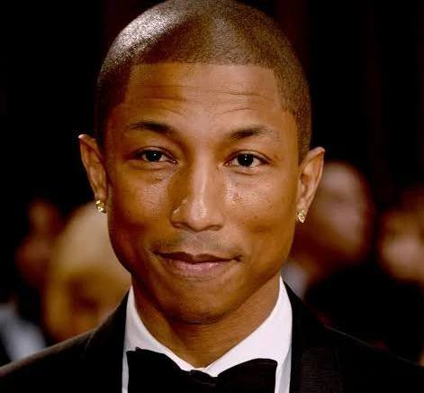
Николя Жескьер
Женское направление с ноября 2013 ведёт Николя Жескьер — один из главных визионеров поколения. Его почерк — футуристичная, архитектурная эстетика, выстроенная на глубоких архивных кодах дома.
Жескьер сталкивает эпохи: викторианские воротники и спортивный крой, сундуки XIX века и силуэты из научной фантастики. Его круизные показы в знаковых архитектурных локациях — медиасобытия мирового масштаба.
LV Dream: бренд как музей
В конце 2022 года дом открыл LV Dream — бесплатное культурное пространство в здании бывшего универмага La Belle Jardinière у Пон-Нёф: девять залов об арт-коллаборациях дома — от Мураками и Кусамы до Рей Кавакубо.
Рядом — кафе и шоколатерия Maxime Frédéric at Louis Vuitton, где монограмма стала десертом. Вместе с Фондом Louis Vuitton это доказательство: бренд давно вышел за рамки продукта и работает как культурная институция. Впереди — крупнейший флагман и первый отель LV.
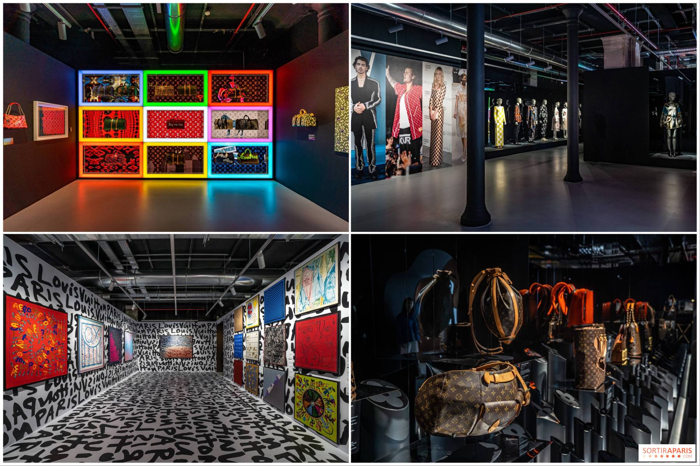
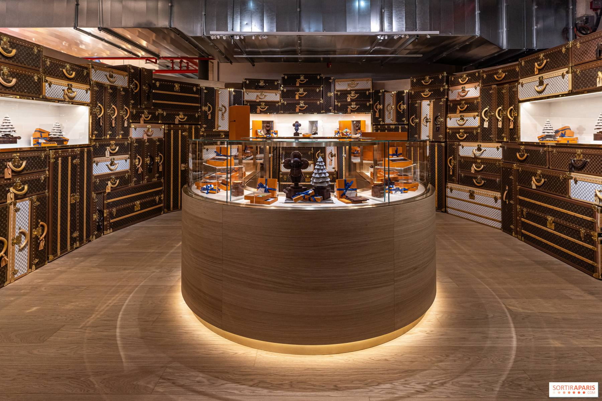
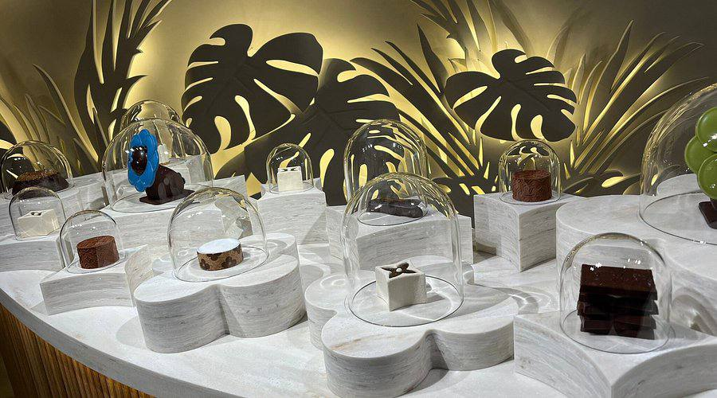
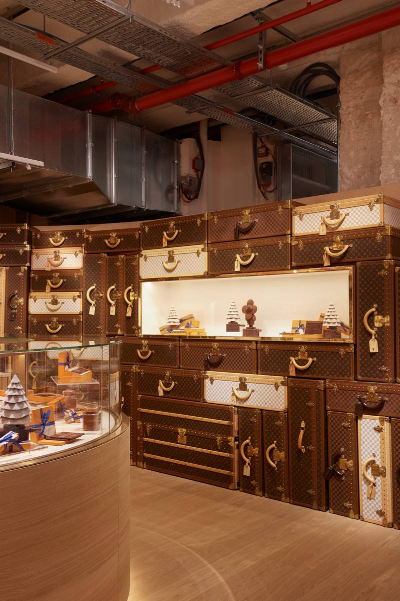
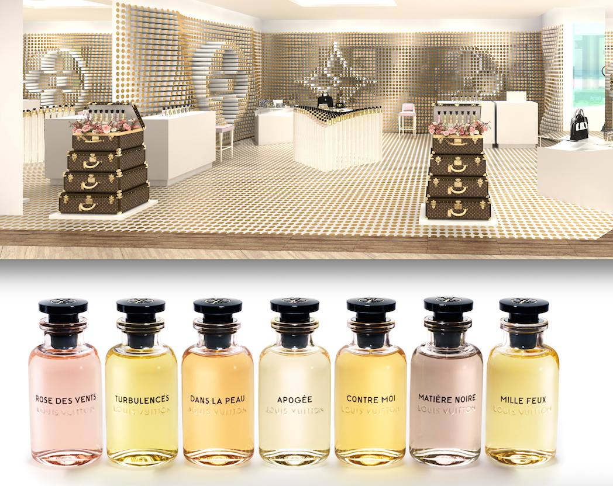
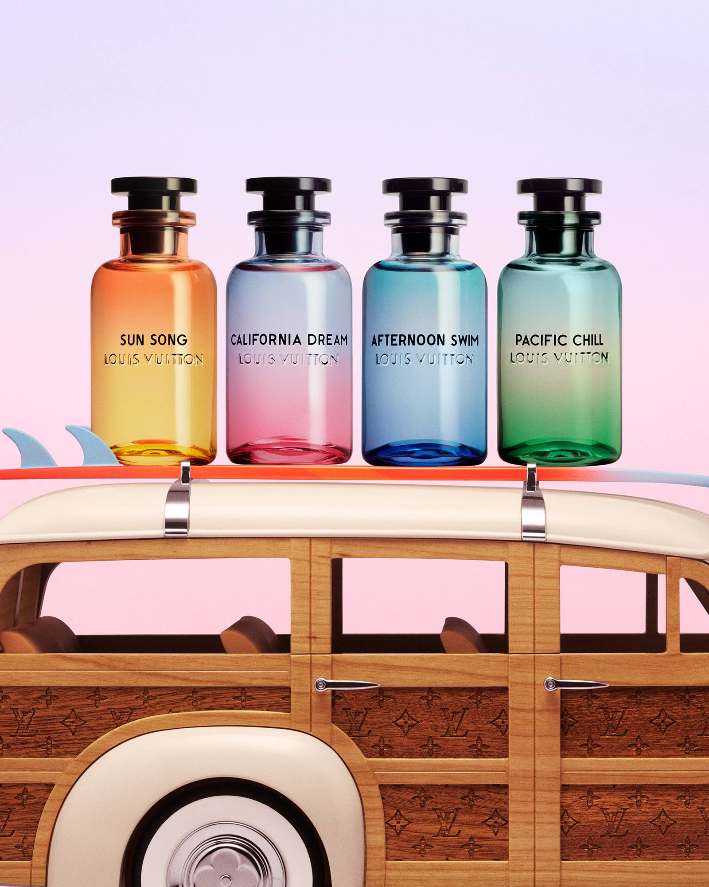
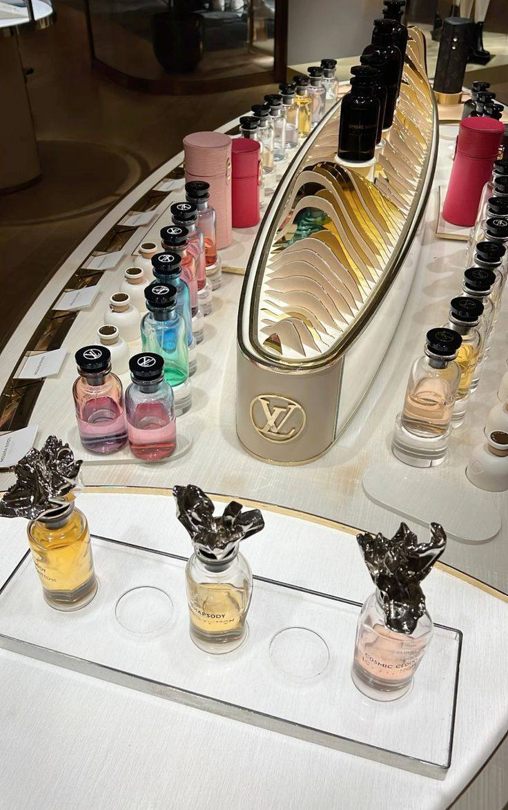
Парфюмерия: самый быстрый рост
В 2016-м дом вернулся в парфюмерию с коллекцией Les Parfums — семь ароматов, созданных мастером-парфюмером Жаком Кавалье-Беллетрудом в ателье Les Fontaines Parfumées в Грасе.
Культовый Ombre Nomade, солнечная линия Cologne Perfumes (Sun Song, California Dream, Afternoon Swim, Pacific Chill), коллаборации с Фрэнком Гери — ароматы стали важнейшей и самой быстрорастущей частью люксового ассортимента дома.
Такаси Мураками
По инициативе Марка Джейкобса японский художник перекрашивает строгую монограмму: Monogram Multicolore — 33 оттенка, улыбающиеся цветы, вишни Cerises и сакура Cherry Blossom.
Граница между высокой модой и современным искусством стёрта; коллекция определила эстетику нулевых и выпускалась до 2015 года.
Великое возвращение: на волне ностальгии по Y2K дом перезапустил коллаборацию — лицо кампании — Зендея, в коллекции снова Multicolore и Cherry Blossom.
Монограмма в 33 оттенках — манифест поп-арта на канве 1896 года
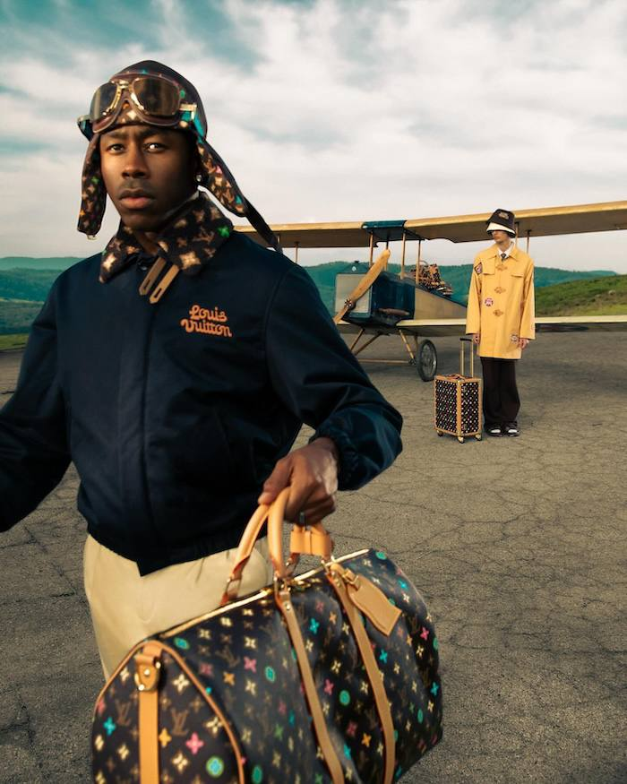
Tyler, the Creator
Весной 2024-го Фаррелл позвал давнего друга — Тайлера — на собственную мужскую капсулу. Её эмблемой стал Craggy Monogram: монограмма 1896 года, перерисованная от руки в оттенках шоколада, ванили и пастели.
В коллекции сошлись коды дома и фирменный стиль Тайлера: preppy престижных колледжей, grandpacore, уличная мода и пастель. Плюс фирменная ирония: шахматы, миска для хлопьев и сундук-«санки» Courrier Lozine 110. Ранее Тайлер уже писал саундтрек к показу дома FW 2022.
Кто ведёт дом сегодня
Пост председателя и CEO Louis Vuitton с февраля 2023 занимает Пьетро Беккари — ветеран LVMH, прежде возглавлявший Fendi и Dior. В декабре 2025 объявлено о расширении его роли: с 1 января 2026 он возглавил и всю LVMH Fashion Group.
Пьетро Беккари — председатель и генеральный директор дома
Фаррелл Уильямс — креативный директор мужских коллекций
Николя Жескьер — художественный директор женских коллекций
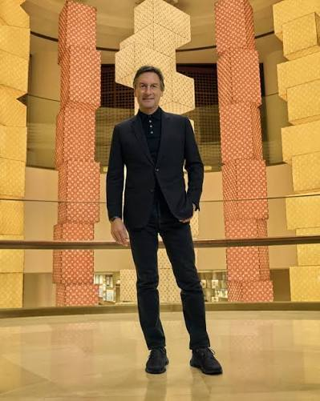
От сундука —
к культурной институции
Подмастерье, прошедший 400 км пешком, построил дом, который 170 лет превращает путешествие в искусство — а искусство в главный язык коммуникации бренда.
Merci. Спасибо за внимание!
Социальные коммуникации